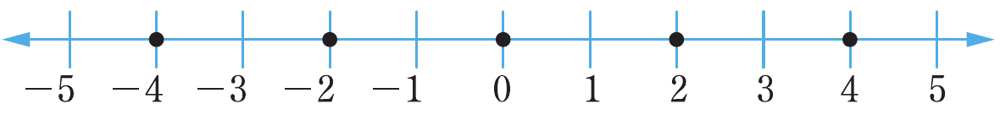
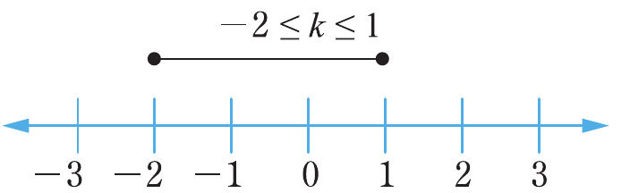
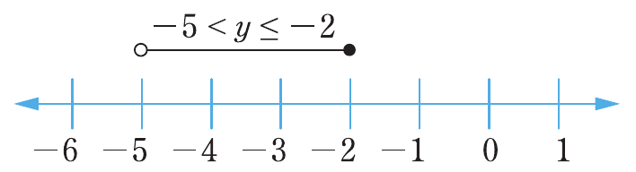
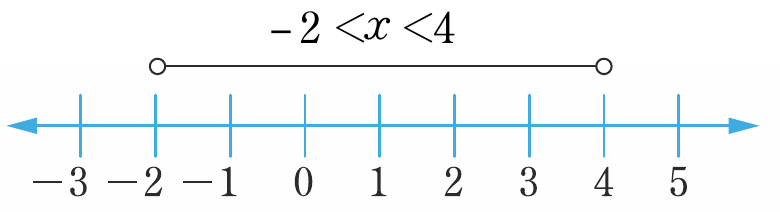
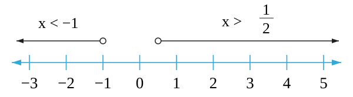
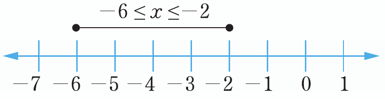
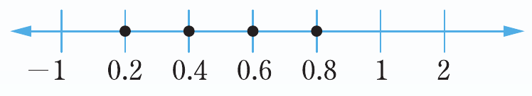
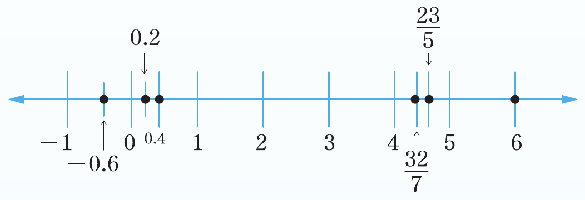
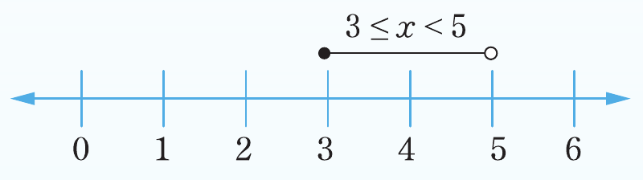

Exercise 2.6
1. (a)

(b)

(c)

(d)

3. (a)

(b)

5.

7.

9. (a)

0.2-0.60.2Three number lines for question 1: part a shows filled points at negative 4, negative 2, 0, 2, and 4; part b shows the interval negative 2 less than or equal to k less than or equal to 1 with filled endpoints; part c shows the interval negative 5 less than y less than or equal to negative 2 with an open circle at negative 5 and a filled circle at negative 2.Number line for question 1 part d showing negative 2 less than x less than 4, with open circles at negative 2 and 4.Three number lines: question 3 part a shows x less than negative 1 or x greater than one-half, with open circles at negative 1 and one-half and arrows extending outward on both sides; question 3 part b shows negative 6 less than or equal to x less than or equal to negative 2, with filled endpoints; question 5 shows filled points at 0.2, 0.4, 0.6, and 0.8 on the number line.Number line for question 7 with labeled points at negative 0.6, 0.2, 0.4, 4 and four-sevenths, 23 over 5, and 6.Number line for question 9 part a showing 3 less than or equal to x less than 5, with a filled circle at 3 and an open circle at 5.